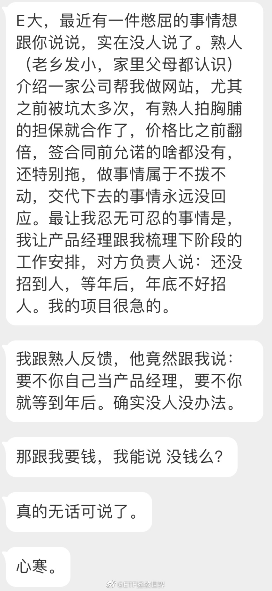

生活小贴士：如果你所在的地区水质硬，水碱大，淋浴的花洒出水口堵了：不用针刺，不用醋泡，只要用手指按一下被堵出水口周围的橡胶把水垢挤出即可。（除非你家的花洒特别特别便宜没有这个功能……）这是今天最后一条，明天见……
有时候看评论就会觉得，有些人是不是童年遭遇过很大的不幸，或者现实生活中过的特别不如意。不然怎么能写出那些字的。这种时候就会觉得不知道他讨厌、可恨，还是可怜。别人朋友之间聊聊什么软件好用，他都能跳出来破口大骂。你说，这种人是不是每天生活在痛苦中。幸福的人会这样吗。我不知道，或者我问问各位，你很幸福的时候，会无缘无故的在网上骂人吗。但话说回来，老话说“可怜之人必有可恨之处”，这话肯定不全面不客观。但用在某些人身上应该是合适的。
今天看到有一位大V说，去面馆吃面被粉丝认出，两人相谈甚欢，深入的探讨了价值投资。人和人确实不一样。这种场面如果发生在我身上，哪怕想想都会觉得非常不舒服。我希望自己能自由自在的逛街、吃饭，自由自在的做任何不违法不违规不违反公序良俗的事情。做一个小透明，不要有任何人认出我打扰我。
第一，在商言商。熟人介绍只是搭建了沟通的桥梁。用不用，怎么用，合同怎么签，都是你决定的。“熟人”并不代表什么，因为还有个词叫“杀熟”。第二，每次被坑都应该成长，对自己的人生都应该是有意义的。否则被坑的毫无意义。 